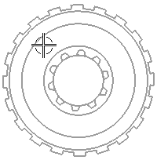
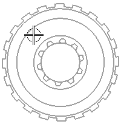

矩形选择与套索选择
矩形选择
使用矩形选择来为选择区域拖出一个矩形边界，矩形方法是默认的使用方法。

套索选择
使用套索徒手绘制包围对象的轮廓，可以一次选择多个对象。
在下面的例子中，套索用来选择四个孔，而没有选择任何相邻的拉伸特征，这个操作要使用矩形选择来实现是不可能的。

使用矩形选择来为选择区域拖出一个矩形边界，矩形方法是默认的使用方法。

使用套索徒手绘制包围对象的轮廓，可以一次选择多个对象。
在下面的例子中，套索用来选择四个孔，而没有选择任何相邻的拉伸特征，这个操作要使用矩形选择来实现是不可能的。